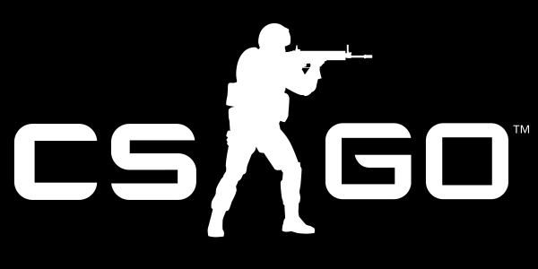
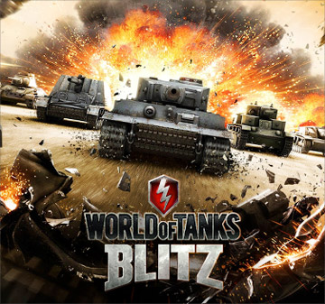
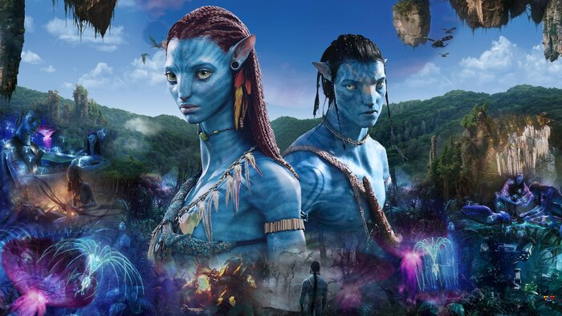
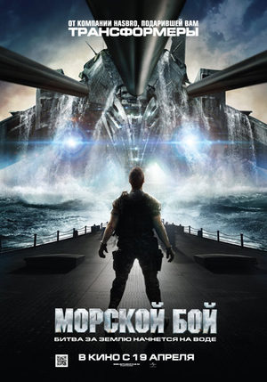

Call of Duty — серия компьютерных игр в жанре шутер от первого лица, посвящённых Второй мировой войне, холодной войне, борьбе с терроризмом, гипотетической Третьей мировой войне, войнам будущего и космическим войнам. Первая игра: Call of Duty / 29 октября 2003 года

Counter-Strike: Global Offensive (CS:GO; с англ. — «Контрудар: глобальное наступление») — многопользовательская компьютерная игра, разработанная компаниями Valve и Hidden Path Entertainment. Последняя игра в серии игр Counter-Strike[4]. Выпуск игры для персональных компьютеров на операционных системах Windows и macOS, также игровых приставках Xbox 360 и PlayStation 3 состоялся 21 августа 2012 года. Дата выпуска: 21 августа 2012 г.
Battlefield Hardline — мультиплатформенная компьютерная игра в жанре шутера от первого лица, тринадцатая по счёту из серии игр Battlefield, разработанная компанией Visceral Games при поддержке DICE и изданная Electronic Arts для платформ PC, PlayStation 3, PlayStation 4, Xbox 360 и Xbox One. Дата выпуска: 17 марта 2015 г.

Battlefront — серия компьютерных игр в жанре тактико-стратегического шутера от первого лица, по вселенной «Звёздных войн». Игры серии разрабатываются компанией Pandemic Studios и издаются компанией LucasArts.

World of Tanks Blitz — массовая многопользовательская онлайн-игра для смартфонов, планшетов на базе платформ iOS и Android, а также для компьютеров на платформе Windows 10 и Mac OS, в том числе игра доступна для скачивания в игровом магазине Steam.
Джейк Салли — бывший морской пехотинец, прикованный к инвалидному креслу. Несмотря на немощное тело, Джейк в душе по-прежнему остается воином. Он получает задание совершить путешествие в несколько световых лет к базе землян на планете Пандора, где корпорации добывают редкий минерал, имеющий огромное значение для выхода Земли из энергетического кризиса.
«Морско́й бой» — американский фантастический фильм 2012 года, по мотивам одноимённой игры, о попытке вторжения инопланетян. Режиссёр Питер Берг. Мировая премьера состоялась 12 апреля 2012 года.
«Мсти́тели» (англ. The Avengers[комм 1]) — американский художественный фильм о супергероях с элементами комедии режиссёра Джосса Уидона, основанный на одноимённых комиксах издательства Marvel Comics. Картина является шестой по счёту в кинематографической вселенной Marvel, а также общим сиквелом предшествующих экранизаций: «Железный человек» (2008), «Невероятный Халк» (2008), «Железный человек 2» (2010), «Тор» (2011) и «Первый мститель» (2011), закрывая первую фазу.

«Человек-паук» (англ. Spider-Man) — американский супергеройский фильм 2002 года от режиссёра Сэма Рэйми. Основанный на одноимённом персонаже Marvel Comics, фильм повествует о жизни Питера Паркера в исполнении Тоби Магуайра, студенте старшей школы, проживающем в Нью-Йорке, который становится борцом с преступностью после получения суперспособностей.

«Чу́до-же́нщина» (англ. Wonder Woman) — супергеройский фильм режиссёра Пэтти Дженкинс, основанный на одноимённом комиксе издательства DC Comics. Является четвёртым фильмом Расширенной вселенной DC после «Отряда самоубийц». В фильме снялись Галь Гадот, Крис Пайн, Дэнни Хьюстон, Робин Райт и Дэвид Тьюлис.


Instagram (инстаграм[5]) — приложение для обмена фотографиями и видеозаписями с элементами социальной сети, позволяющее снимать фотографии и видео, применять к ним фильтры, а также распространять их через свой сервис и ряд других социальных сетей.

Facebook (Фе́йсбу́к[4], [ˈfeɪsˌbʊk]) — крупнейшая социальная сеть в мире[5] и одноимённая компания (Facebook Inc.), владеющая ею. Была основана 4 февраля 2004 года Марком Цукербергом и его соседями по комнате во время обучения в Гарвардском университете[6] — Эдуардо Саверином, Дастином Московицем и Крисом Хьюзом.

«Тви́ттер» (Twitter[6], от англ. to tweet — «чирикать, щебетать, болтать») — социальная сеть для публичного обмена сообщениями при помощи веб-интерфейса, SMS, средств мгновенного обмена сообщениями или сторонних программ-клиентов для пользователей интернета любого возраста.

LinkedIn — социальная сеть для поиска и установления деловых контактов. В LinkedIn зарегистрировано более 500 млн пользователей, представляющих 150 отраслей бизнеса из 200 стран.

Pinterest — социальный интернет-сервис, фотохостинг, позволяющий пользователям добавлять в режиме онлайн изображения, помещать их в тематические коллекции и делиться ими с другими пользователями. Изображения можно «приколоть» к коллекциям, которые называются «досками».

«ВКонта́кте» — российская социальная сеть со штаб-квартирой в Санкт-Петербурге. Сайт доступен более чем на 90 языках; особенно популярен среди русскоязычных пользователей.

Би́лли А́йлиш Па́йрат Бэрд О’Ко́ннелл[6][7] (англ. Billie Eilish Pirate Baird O'Connell; род. 18 декабря 2001) — американская певица и автор песен. Снискала известность в 2016 году благодаря публикации дебютного сингла «Ocean Eyes» на SoundCloud. В 2019 году её дебютный альбом When We All Fall Asleep, Where Do We Go? возглавил американский (Billboard 200) и британский (UK Albums Chart) хит-парады, а сингл «Bad Guy» вышел на первое место в Billboard Hot 100 (США).
А́лан О́лав Уо́кер — англо-норвежский музыкальный продюсер и диджей. Стал известен в 2015 году после выпуска сингла «Faded», который получил платиновый статус в нескольких странах и собрал более 2,6 млрд просмотров на YouTube. В 2018 году выпустил свой дебютный студийный альбом Different World.

Кристофер Комсток, более известный по сценическому псевдониму Marshmello — американский диджей и музыкальный продюсер в жанре электронной музыки. По состоянию на 2019 год занимает 5 место в списке лучших диджеев мира по версии журнала DJ Mag.
Ариа́на Гра́нде-Буте́ра — американская актриса, певица, автор песен, музыкальный продюсер, обладательница премии «Грэмми». Профессиональную карьеру в шоу-бизнесе Ариана Гранде начала в 2008 году в бродвейском мюзикле «13».
Э́двард Кри́стофер Ширан (англ. Edward Christopher Sheeran; род. 17 февраля 1991 года) — британский поп-музыкант и актёр. Первый коммерческий успех пришёл к нему в июне 2011 года благодаря синглу «The A Team», занявшему третье место в британском чарте. Все его альбомы «+» (2011), «x» (2015), «÷» (2017) и «No.6 Collaborations Project» (2019)[1] занимали первые места в британском чарте, последние два также возглавляли американский чарт. Песня Ширана «Thinking Out Loud» принесла ему две премии «Грэмми» в 2016 году.
Чарли Пут, — американский поп-певец, автор песен и музыкальный продюсер наиболее известный благодаря композиции «See You Again», записанной совместно с рэпером Уизом Халифой для саундтрека к фильму Форсаж 7. Песня возглавила хит-парады США, Австралии, Австрии, Канады и некоторых других стран.

Minecraft — компьютерная инди-игра в жанре песочницы, разработанная шведским программистом Маркусом Перссоном и выпущенная его компанией Mojang AB.

Roblox — многопользовательская онлайн-платформа, которая позволяет пользователям создавать свои собственные и играть в созданные другими пользователями игры.

Slime Rancher — компьютерная игра-симулятор от первого лица на движке Unity в открытом мире с элементами приключенческого боевика, разработанная и выпущенная компанией Monomi Park.
Five Nights at Freddy’s, кратко FNaF — франшиза видеоигр, созданная разработчиком игр Скоттом Коутоном. Франшиза рассказывает о выдуманной пиццерии «Freddy Fazbear’s Pizza», напоминающей Chuck E.